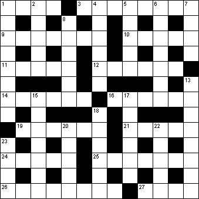

|
|
Daily Quick Crossword
4 June

|
Across 1 Indication (4)3 Cloudy (8) 9 Hormone secreted by the pancreas (7) 10 Despondency (5) 11 Keep away from (5) 12 Playground item (6) 14 Custodian (6) 16 Become extinct (3,3) 19 Flood, downpour (6) 21 Elite (5) 24 Exhaust (3,2) 25 Make ready (7) 26 Able to read and write (8) 27 Capri, for example (4) |
Down 1 Asian country (3,5)2 Vigorous and enthusiastic enjoyment (5) 4 Disappear (6) 5 Knave (5) 6 Savoury pear-shaped fruit (7) 7 Burial place (4) 8 Solemn promise (6) 13 Wild headlong rush (8) 15 Himalayan peak (7) 17 Moved by slow degrees (6) 18 Tyrant (6) 20 Part of a shoe (5) 22 School tests (5) 23 Twofold (4) |
|
Copyright © 2020 Simply Daily Puzzles
|